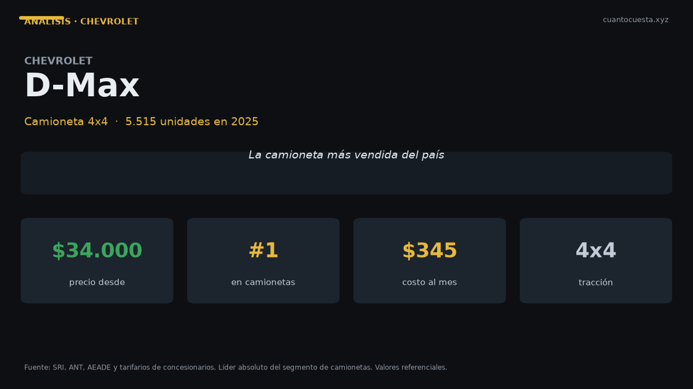

Chevrolet D-Max en Ecuador: análisis completo, costos y veredicto
Es la camioneta más vendida de Ecuador con 5.515 unidades en 2025. Precio, costo real de operación diésel, comparación y veredicto para trabajo.

El Chevrolet D-Max es la camioneta más vendida de Ecuador: 5.515 unidades en 2025. Se comercializa entre $34.000 y $46.000. Su argumento no es el precio — hay camionetas más baratas — sino la red de posventa Chevrolet en todo el país, incluidas ciudades intermedias donde otras marcas no tienen taller.
El mercado respalda esa lógica. 2025 cerró con 124.505 vehículos nuevos (+15% vs 2024) y el primer semestre de 2026 llegó a 78.185 unidades (+41,4%), récord histórico. Las camionetas siguen siendo el segmento de mayor uso laboral del país, y en ese segmento el D-Max vende más que cualquier otro modelo: apenas por debajo del Kia Soluto entre los vehículos de mayor volumen del país.
Antes de firmar, pide por escrito el costo del seguro. En una camioneta de $40.000, la prima del primer año ronda el 4% del valor: entre $1.360 y $1.840. Esa cifra puede superar todo el mantenimiento anual de un sedán compacto.
Ficha técnica
Aquí hay que ser claro: las fichas publicadas no detallan las cifras mecánicas del D-Max. No publicamos números que no podamos verificar.
| Dato | Chevrolet D-Max |
|---|---|
| Segmento | Camioneta 4x4 |
| Motor | No especificado públicamente |
| Potencia | No especificado públicamente |
| Torque | No especificado públicamente |
| Transmisión | No especificado públicamente (varía por versión) |
| Consumo homologado | No publicado oficialmente |
| Combustible | Diésel Premium a $3,20 el galón (referencia nacional) |
| Precio | $34.000 – $46.000 |
| Garantía | Verificar por versión en la agencia |
Si llegaste buscando el dato de potencia exacto, la respuesta honesta es que Chevrolet Ecuador no lo publica en su material consultado. Pídelo en la agencia junto con el consumo homologado y el costo de la revisión de los 10.000 km.
Precio y versiones en Ecuador
| Rango | Precio de referencia |
|---|---|
| Entrada del rango | $34.000 |
| Tope del rango | $46.000 |
| Amplitud entre versiones | $12.000 |
Doce mil dólares de diferencia entre la versión más accesible y la más equipada es normal en camionetas: ahí se paga 4x4, caja automática, cabina doble y nivel de equipamiento. El precio final varía por agencia y por promoción del mes.
Cuánto cuesta mantenerlo
Escenario: 12.000 km al año, diésel a $3,20 el galón. El consumo no está publicado, así que usamos una estimación de 11 km/l para un uso mixto en camioneta diésel. Tómalo como referencia, no como dato oficial: con carga y en carretera de montaña el gasto sube.
| Rubro anual | Rango estimado |
|---|---|
| Combustible (estimación 11 km/l) | ~$922 |
| Mantenimiento (aceite, filtros, alineación) | $600 – $900 |
| Matrícula (IPVM progresivo sobre avalúo alto) | $350 – $600 |
| Seguro (≈4% del valor) | $1.360 – $1.840 |
| Llantas (juego cada ~40.000 km) | $200 – $300 |
| Otros (lavado, imprevistos) | $100 – $200 |
| Total anual | $3.530 – $4.760 |
| Equivalente mensual | $294 – $397 |
Dos advertencias sobre ese cuadro:
La matrícula de un vehículo de $40.000 no es la de un auto de $16.000. El IPVM del SRI es progresivo, del 0,5% al 6% sobre el avalúo, y para camionetas de este valor pesa bastante más que el promedio de ~$180 anual que la gente cita.
El consumo es el rubro que más se mueve. Si tu D-Max trabaja cargada o en sierra, el gasto en diésel puede fácilmente superar los $1.200 al año. Aun así, el diésel Premium a $3,20 el galón sigue siendo más barato que la Extra y la Ecopaís a $3,26, y rinde más por galón.
Precios unitarios de referencia en talleres certificados: cambio de aceite y filtro $50–$90, filtro de combustible $30–$60 (crítico en diésel), pastillas delanteras $80–$150, amortiguadores $200–$350, batería $100–$200, llanta $120–$250.
El SPPAT cubre atención médica a víctimas de accidentes de tránsito, pero no cubre los daños de tu camioneta. En un vehículo que entra a lastre y camino rural, un seguro todo riesgo no es un lujo.
Equipamiento y seguridad
Las fuentes consultadas no detallan el equipamiento por versión del D-Max. Lo que sí es verificable es el argumento de marca: la red de servicio Chevrolet llega a ciudades intermedias, algo que en camionetas de trabajo vale tanto como una ficha técnica brillante. Una camioneta varada a 200 km del taller más cercano cuesta más que cualquier opción de equipamiento.
Antes de comprar, exige por escrito: número de airbags, presencia de control de estabilidad y de asistente de arranque en pendiente, y cobertura exacta de la garantía.
Para quién es y para quién no
Es para ti si:
- Usas la camioneta como herramienta de trabajo, no como auto familiar
- Necesitas taller y repuestos en ciudades intermedias
- Recorres lastre, finca o carretera en mal estado
- Puedes asumir un seguro de cuatro cifras al año
No es para ti si:
- Tu recorrido es urbano y sin carga: pagarías $12.000 de más por capacidad que no usas
- Tu presupuesto de operación es menor a $300 al mes
- Necesitas certeza documental de potencia y consumo antes de comprar
- Buscas el menor costo de entrada del segmento: hay opciones desde $27.000
Comparación con sus rivales directos
| Modelo | Precio | Unidades 2025 | Dato clave |
|---|---|---|---|
| Chevrolet D-Max | $34.000 – $46.000 | 5.515 | La más vendida del país |
| GWM Poer | $27.000 – $38.000 | 4.092 | Ensamblada en Ambato, la más barata |
| Toyota Hilux | $38.000 – $55.000 | 1.483 | Mayor retención de valor y servicios más espaciados |
La diferencia de precio entre la Poer y la D-Max llega a $7.000 en el piso del rango. La Hilux arranca $4.000 por encima del D-Max y mantiene el mejor valor de reventa del grupo, con intervalos de mantenimiento más largos que el promedio.
Si el criterio es costo total, mira este contraste: el mantenimiento anual de una Hilux o RAV4 se mueve entre $300 y $600 por marca, mientras una RAM 1500 va de $800 a $1.200, y una Jeep de $700 a $1.000. El costo de propiedad de una camioneta depende más de la marca que del tamaño.
Veredicto
El Chevrolet D-Max es la apuesta segura, no la más barata. Gana por red de servicio, volumen de ventas y disponibilidad de repuestos: 5.515 unidades al año significan miles de camionetas con los mismos repuestos circulando por el país.
Si tu criterio principal es el precio de entrada, la GWM Poer cuesta hasta $7.000 menos y se ensambla en Ecuador. Si tu criterio es la reventa, la Hilux lidera. El D-Max gana donde más duele en el uso real: encontrar taller y repuesto cuando la camioneta es tu herramienta de trabajo.
Precios referenciales de lista a septiembre de 2026. El consumo del D-Max no está publicado oficialmente; la cifra de combustible es una estimación declarada. Varían precios y versiones por agencia y promoción. No constituye asesoría financiera.
Sigue leyendo
Chery Arrizo en Ecuador: análisis completo, costos y veredicto
Vendió 1.534 unidades en 2025 y Chery creció 50,1% en el primer semestre de 2026. Precio, repue
Chevrolet Groove en Ecuador: análisis completo, costos y veredicto
El SUV más vendido de Ecuador: 4.063 unidades en 2025. Precio desde $19.999, cuota de $309 al m
GWM Poer en Ecuador: análisis completo, costos y veredicto
La camioneta ensamblada en Ambato que rompió el precio del 4x4: 4.092 unidades en 2025. Precio,
Hyundai Grand i10 en Ecuador: análisis completo, costos y veredicto
Segundo auto de pasajeros más vendido de Ecuador con 1.690 unidades en 2025. Precio desde $13.9
Hyundai Tucson en Ecuador: análisis completo, costos y veredicto
Vendió 2.395 unidades en 2025 y arranca en $32.499. Motor 2.5 L, 6 airbags y garantía de 5 años
Cómo usamos estos datos
Las cifras de esta guía provienen de fuentes públicas oficiales y tarifarios de concesionarios publicados. Los valores son referenciales: tasas municipales, promociones y precios de repuestos varían. Verifica siempre en la entidad o concesionario antes de decidir.